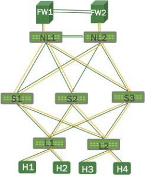
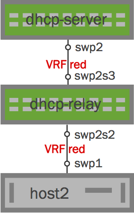
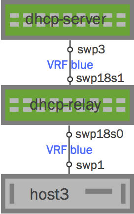

Virtual Routing and Forwarding - VRF
Cumulus Linux provides virtual routing and forwarding (VRF) to allow for the presence of multiple independent routing tables working simultaneously on the same router or switch. This permits multiple network paths without the need for multiple switches. Think of this feature as VLAN for layer 3, but unlike VLANs, there is no field in the IP header carrying it. Other implementations call this feature VRF-Lite.
The primary use cases for VRF in a data center are similar to VLANs at layer 2: using common physical infrastructure to carry multiple isolated traffic streams for multi-tenant environments, where these streams are allowed to cross over only at configured boundary points, typically firewalls or IDS. You can also use it to burst traffic from private clouds to enterprise networks where the burst point is at layer 3. Or you can use it in an OpenStack deployment.
VRF is fully supported in the Linux kernel, so it has the following characteristics:
-
The VRF is presented as a layer 3 master network device with its own associated routing table.
-
The layer 3 interfaces (VLAN interfaces, bonds, switch virtual interfaces/SVIs) associated with the VRF are enslaved to that VRF; IP rules direct FIB (forwarding information base) lookups to the routing table for the VRF device.
-
The VRF device can have its own IP address, known as a VRF-local loopback.
-
Applications can use existing interfaces to operate in a VRF context — by binding sockets to the VRF device or passing the ifindex using cmsg.
-
Listen sockets used by services are VRF-global by default unless the application is configured to use a more limited scope. Connected sockets (like TCP) are then bound to the VRF domain in which the connection originates.
-
Connected and local routes are placed in appropriate VRF tables.
-
Neighbor entries continue to be per-interface, and you can view all entries associated with the VRF device.
-
A VRF does not map to its own network namespace; however, you can nest VRFs in a network namespace.
-
You can use existing Linux tools to interact with it, such as tcpdump.
You configure VRF by associating each subset of interfaces to a VRF routing table, and configuring an instance of the routing protocol — BGP — for each routing table.

Contents
Configuring VRF
Each routing table is called a VRF table, and has its own table ID. You configure VRF using NCLU, then place the layer 3 interface in the VRF. You can have a maximum of 64 VRFs on a switch.
When you configure a VRF, you follow a similar process to other network interfaces. Keep in mind the following for a VRF table:
-
It can have an IP address, a loopback interface for the VRF.
-
Associated rules are added automatically.
-
You can also add a default route to avoid skipping across tables when the kernel forwards the packet.
-
Names for VRF tables can be up to 15 characters. However, you cannot use the name mgmt, as this name can only be used for management VRF.
To configure a VRF, run:
cumulus@switch:~$ net add vrf red vrf-table autocumulus@switch:~$ net add interface swp1 vrf redThese commands result in the following VRF configuration in the /etc/network/interfaces file:
auto rediface red vrf-table auto auto swp1 iface swp1 vrf redSpecifying a Table ID
Instead of having Cumulus Linux assign a table ID for the VRF table, you can specify your own table ID in the configuration. The table ID to name mapping is saved in /etc/iproute2/rt_tables.d/ for name-based references. So instead of using the auto option above, specify the table ID like this:
cumulus@switch:~$ net add vrf red vrf-table 1016If you do specify a table ID, it must be in the range of 1001 to 1255 which is reserved in Cumulus Linux for VRF table IDs.
Bringing a VRF Up after Downing It with ifdown
If you take down a VRF using ifdown, to bring it back up you need to do one of two things:
-
Use ifup --with-depends <vrf>
-
Use ifreload -a
For example:
cumulus@switch:~$ sudo ifdown redcumulus@switch:~$ sudo ifup --with-depends redUsing the vrf Command
The vrf command returns information about VRF tables that is otherwise not available in other Linux commands, such as iproute. You can also use it to execute non-VRF-specific commands and perform other tasks related to VRF tables.
To get a list of VRF tables, run:
cumulus@switch:~$ vrf list VRF Table---------------- -----red 1016To return a list of processes and PIDs associated with a specific VRF table, run vrf task list <vrf-name>. For example:
cumulus@switch:~$ vrf task list redVRF: red -----------------------dhclient 2508sshd 2659bash 2681su 2702bash 2720vrf 2829To determine which VRF table is associated with a particular PID, run vrf task identify <pid>. For example:
cumulus@switch:~$ vrf task identify 2829redRunning IPv4 and IPv6 Commands in a VRF Context
You can execute non-VRF-specific Linux commands and perform other tasks against a given VRF table. This typically applies to single-use commands started from a login shell, as they affect only AF_INET and AF_INET6 sockets opened by the command that gets executed; it has no impact on netlink sockets, associated with the ip command.
To execute such a command against a VRF table, run vrf task exec <vrf-name> <command>. For example, to SSH from the switch to a device accessible through VRF red:
cumulus@switch:~$ sudo vrf task exec red ssh user@hostYou should manage long-running services with systemd using the service@vrf notation; for example, systemctl start ntp@mgmt. systemd-based services are stopped when a VRF is deleted and started when the VRF is created. For example, restarting networking or running an ifdown/ifup sequence.
Quagga Operation in a VRF
In Cumulus Linux 3.0 and later, BGP and static routing (IPv4 and IPv6) are supported within a VRF context. Various Quagga routing constructs, such as routing tables, nexthops, router-id, and related processing are also VRF-aware. However, OSPFv2 and OSPFv3 are not VRF-aware and can only operate in the default VRF.
Quagga learns of VRFs provisioned on the system as well as interface attachment to a VRF through notifications from the kernel.
You can assign switch ports to each VRF table with an interface-level configuration, and BGP instances can be assigned to the table with a BGP router-level command. Note that OSPFv2 and OSPFv3 are not VRF-aware.
Because BGP is VRF-aware, it supports per-VRF neighbors, both iBGP and eBGP as well as numbered and unnumbered interfaces. Non-interface-based VRF neighbors are bound to the VRF, which is how you can have overlapping address spaces in different VRFs. Each VRF can have its own parameters, such as address families and redistribution. Incoming connections rely on the Linux kernel for VRF-global sockets. BGP neighbors can be tracked using BFD, both for single and multiple hops. You can configure multiple BGP instances, associating each with a VRF.
As mentioned above, VRFs are provisioned through /etc/network/interfaces. VRFs can be pre-provisioned in Quagga too, but they become active only when configured through /etc/network/interfaces.
-
A VRF can be pre-provisioned in Quagga by running the command vrf vrf-name.
-
A BGP instance corresponding to a VRF can be pre-provisioned by configuring router bgp asn vrf vrf-name. Under this context, all existing BGP parameters can be configured - neighbors, peer-groups, address-family configuration, redistribution etc.
-
Static routes (IPv4 and IPv6) can be provisioned in a VRF by specifying the VRF along with the static route configuration. For example, ip route prefix nexthop vrf vrf-name. The VRF has to exist for this configuration to be accepted - either already defined through /etc/network/interfaces or pre-provisioned in Quagga.
Example Configuration
Here's an example VRF configuration in BGP:
cumulus@switch:~$ net add bgp vrf vrf1012 autonomous-system 64900cumulus@switch:~$ net add bgp vrf vrf1012 router-id 6.0.2.7cumulus@switch:~$ net add bgp vrf vrf1012 neighbor ISL peer-groupcumulus@switch:~$ net add bgp vrf vrf1012 neighbor ISLv6 peer-groupcumulus@switch:~$ net add bgp vrf vrf1012 neighbor swp1.2 interface v6only peer-group ISLv6cumulus@switch:~$ net add bgp vrf vrf1012 neighbor swp1.2 remote-as externalcumulus@switch:~$ net add bgp vrf vrf1012 neighbor swp3.2 interface v6only peer-group ISLv6cumulus@switch:~$ net add bgp vrf vrf1012 neighbor swp3.2 remote-as externalcumulus@switch:~$ net add bgp vrf vrf1012 neighbor 169.254.2.18 remote-as externalcumulus@switch:~$ net add bgp vrf vrf1012 neighbor 169.254.2.18 peer-group ISLcumulus@switch:~$ net add bgp vrf vrf1012 ipv4 unicast network 20.7.2.0/24cumulus@switch:~$ net add bgp vrf vrf1012 ipv4 unicast neighbor ISL activatecumulus@switch:~$ net add bgp vrf vrf1012 neighbor ISL route-map ALLOW_BR2 outcumulus@switch:~$ net add bgp vrf vrf1012 ipv6 unicast network 2003:7:2::/125cumulus@switch:~$ net add bgp vrf vrf1012 ipv6 unicast neighbor ISLv6 activatecumulus@switch:~$ net add bgp vrf vrf1012 neighbor ISLv6 route-map ALLOW_BR2_v6 outThese commands produce the following configuration in the /etc/quagga/Quagga.conf file:
router bgp 64900 vrf vrf1012 bgp router-id 6.0.2.7 no bgp default ipv4-unicast neighbor ISL peer-group neighbor ISLv6 peer-group neighbor swp1.2 interface v6only peer-group ISLv6 neighbor swp1.2 remote-as external neighbor swp3.2 interface v6only peer-group ISLv6 neighbor swp3.2 remote-as external neighbor 169.254.2.18 remote-as external neighbor 169.254.2.18 peer-group ISL ! address-family ipv4 unicast network 20.7.2.0/24 neighbor ISL activate neighbor ISL route-map ALLOW_BR2 out exit-address-family ! address-family ipv6 unicast network 2003:7:2::/125 neighbor ISLv6 activate neighbor ISLv6 route-map ALLOW_BR2_v6 out exit-address-family!Example Commands to Show VRF Data
There are a number of ways to interact with VRFs, including NCLU, vtysh (the Quagga CLI) and iproute2.
Showing VRF Data Using NCLU Commands
To show the routes in the VRF:
cumulus@switch:~$ net show route vrf redRIB entry for red=================Codes: K - kernel route, C - connected, S - static, R - RIP, O - OSPF, I - IS-IS, B - BGP, T - Table, > - selected route, * - FIB routeC>* 169.254.2.8/30 is directly connected, swp1.2C>* 169.254.2.12/30 is directly connected, swp2.2C>* 169.254.2.16/30 is directly connected, swp3.2To show the BGP summary for the VRF:
cumulus@switch:~$ net show bgp vrf red summaryBGP router identifier 6.0.2.7, local AS number 64900 vrf-id 14BGP table version 0RIB entries 1, using 120 bytes of memoryPeers 6, using 97 KiB of memoryPeer groups 2, using 112 bytes of memoryNeighbor V AS MsgRcvd MsgSent TblVer InQ OutQ Up/Down State/PfxRcds3(169.254.2.18) 4 65000 102039 102040 0 0 0 3d13h03m 0s1(169.254.2.10) 4 65000 102039 102040 0 0 0 3d13h03m 0s2(169.254.2.14) 4 65000 102039 102040 0 0 0 3d13h03m 0Total number of neighbors 3To show BGP (IPv4) routes in the VRF:
cumulus@switch:~$ net show bgp vrf vrf1012BGP table version is 0, local router ID is 6.0.2.7Status codes: s suppressed, d damped, h history, * valid, > best, = multipath, i internal, r RIB-failure, S Stale, R RemovedOrigin codes: i - IGP, e - EGP, ? - incomplete Network Next Hop Metric LocPrf Weight Path 20.7.2.0/24 0.0.0.0 0 32768 iTotal number of prefixes 1However, to show BGP IPv6 routes in the VRF, you need to use vtysh, the Quagga CLI:
cumulus@switch:~$ sudo vtyshswitch# show bgp vrf vrf1012BGP table version is 0, local router ID is 6.0.2.7Status codes: s suppressed, d damped, h history, * valid, > best, = multipath, i internal, r RIB-failure, S Stale, R RemovedOrigin codes: i - IGP, e - EGP, ? - incomplete Network Next Hop Metric LocPrf Weight Path 2003:7:2::/125 :: 0 32768 iTotal number of prefixes 1switch# exitcumulus@switch:~$Showing VRF Data Using Quagga Commands
Show all VRFs learned by Quagga from the kernel. The table ID shows the corresponding routing table in the kernel either automatically assigned or manually defined:
cumulus@switch:~$ sudo vtyshswitch# show vrfvrf vrf1012 id 14 table 1012vrf vrf1013 id 21 table 1013vrf vrf1014 id 28 table 1014switch# exitcumulus@switch:~$ Show VRFs configured in BGP, including the default. A non-zero ID is a VRF that has also been actually provisioned — that is, defined in /etc/network/interfaces:
cumulus@switch:~$ sudo vtyshswitch# show bgp vrfsType Id RouterId #PeersCfg #PeersEstb NameDFLT 0 6.0.0.7 0 0 Default VRF 14 6.0.2.7 6 6 vrf1012 VRF 21 6.0.3.7 6 6 vrf1013 VRF 28 6.0.4.7 6 6 vrf1014Total number of VRFs (including default): 4switch# exitcumulus@switch:~$ Display interfaces known to Quagga and attached to this VRF:
cumulus@switch:~$ sudo vtyshswitch# show interface vrf vrf1012Interface br2 is up, line protocol is down PTM status: disabled vrf: vrf1012 index 13 metric 0 mtu 1500 flags: <UP,BROADCAST,MULTICAST> inet 20.7.2.1/24 inet6 fe80::202:ff:fe00:a/64 ND advertised reachable time is 0 milliseconds ND advertised retransmit interval is 0 milliseconds ND router advertisements are sent every 600 seconds ND router advertisements lifetime tracks ra-interval ND router advertisement default router preference is medium Hosts use stateless autoconfig for addresses.switch# exitcumulus@switch:~$Showing VRF Data Using ip Commands
To list all VRFs provisioned, showing the VRF ID (vrf1012, vrf1013 and vrf1014 below) as well as the table ID:
cumulus@switch:~$ ip -d link show type vrf 14: vrf1012: <NOARP,MASTER,UP,LOWER_UP> mtu 1500 qdisc pfifo_fast state UNKNOWN mode DEFAULT group default qlen 1000 link/ether 46:96:c7:64:4d:fa brd ff:ff:ff:ff:ff:ff promiscuity 0 vrf table 1012 addrgenmode eui64 21: vrf1013: <NOARP,MASTER,UP,LOWER_UP> mtu 1500 qdisc pfifo_fast state UNKNOWN mode DEFAULT group default qlen 1000 link/ether 7a:8a:29:0f:5e:52 brd ff:ff:ff:ff:ff:ff promiscuity 0 vrf table 1013 addrgenmode eui64 28: vrf1014: <NOARP,MASTER,UP,LOWER_UP> mtu 1500 qdisc pfifo_fast state UNKNOWN mode DEFAULT group default qlen 1000 link/ether e6:8c:4d:fc:eb:b1 brd ff:ff:ff:ff:ff:ff promiscuity 0 vrf table 1014 addrgenmode eui64 To list the interfaces attached to a specific VRF:
cumulus@switch:~$ ip -d link show vrf vrf10128: swp1.2@swp1: <BROADCAST,MULTICAST,UP,LOWER_UP> mtu 1500 qdisc noqueue master vrf1012 state UP mode DEFAULT group default link/ether 00:02:00:00:00:07 brd ff:ff:ff:ff:ff:ff promiscuity 0 vlan protocol 802.1Q id 2 <REORDER_HDR> vrf_slave addrgenmode eui64 9: swp2.2@swp2: <BROADCAST,MULTICAST,UP,LOWER_UP> mtu 1500 qdisc noqueue master vrf1012 state UP mode DEFAULT group default link/ether 00:02:00:00:00:08 brd ff:ff:ff:ff:ff:ff promiscuity 0 vlan protocol 802.1Q id 2 <REORDER_HDR> vrf_slave addrgenmode eui64 10: swp3.2@swp3: <BROADCAST,MULTICAST,UP,LOWER_UP> mtu 1500 qdisc noqueue master vrf1012 state UP mode DEFAULT group default link/ether 00:02:00:00:00:09 brd ff:ff:ff:ff:ff:ff promiscuity 0 vlan protocol 802.1Q id 2 <REORDER_HDR> vrf_slave addrgenmode eui64 11: swp4.2@swp4: <BROADCAST,MULTICAST,UP,LOWER_UP> mtu 1500 qdisc noqueue master vrf1012 state UP mode DEFAULT group default link/ether 00:02:00:00:00:0a brd ff:ff:ff:ff:ff:ff promiscuity 0 vlan protocol 802.1Q id 2 <REORDER_HDR> vrf_slave addrgenmode eui64 12: swp5.2@swp5: <BROADCAST,MULTICAST,UP,LOWER_UP> mtu 1500 qdisc noqueue master vrf1012 state UP mode DEFAULT group default link/ether 00:02:00:00:00:0b brd ff:ff:ff:ff:ff:ff promiscuity 0 vlan protocol 802.1Q id 2 <REORDER_HDR> vrf_slave addrgenmode eui64 13: br2: <NO-CARRIER,BROADCAST,MULTICAST,UP> mtu 1500 qdisc noqueue master vrf1012 state DOWN mode DEFAULT group default link/ether 00:00:00:00:00:00 brd ff:ff:ff:ff:ff:ff promiscuity 0 bridge forward_delay 100 hello_time 200 max_age 2000 ageing_time 30000 stp_state 0 priority 32768 vlan_filtering 0 vlan_protocol 802.1Q bridge_id 8000.0:0:0:0:0:0 designated_root 8000.0:0:0:0:0:0 root_port 0 root_path_cost 0 topology_change 0 topology_change_detected 0 hello_timer 0.00 tcn_timer 0.00 topology_change_timer 0.00 gc_timer 202.23 vlan_default_pvid 1 group_fwd_mask 0 group_address 01:80:c2:00:00:00 mcast_snooping 1 mcast_router 1 mcast_query_use_ifaddr 0 mcast_querier 0 mcast_hash_elasticity 4096 mcast_hash_max 4096 mcast_last_member_count 2 mcast_startup_query_count 2 mcast_last_member_interval 100 mcast_membership_interval 26000 mcast_querier_interval 25500 mcast_query_interval 12500 mcast_query_response_interval 1000 mcast_startup_query_interval 3125 nf_call_iptables 0 nf_call_ip6tables 0 nf_call_arptables 0 vrf_slave addrgenmode eui64 To show IPv4 routes in a VRF:
cumulus@switch:~$ ip route show table vrf1012unreachable default metric 240 broadcast 20.7.2.0 dev br2 proto kernel scope link src 20.7.2.1 dead linkdown 20.7.2.0/24 dev br2 proto kernel scope link src 20.7.2.1 dead linkdown local 20.7.2.1 dev br2 proto kernel scope host src 20.7.2.1 broadcast 20.7.2.255 dev br2 proto kernel scope link src 20.7.2.1 dead linkdown broadcast 169.254.2.8 dev swp1.2 proto kernel scope link src 169.254.2.9 169.254.2.8/30 dev swp1.2 proto kernel scope link src 169.254.2.9 local 169.254.2.9 dev swp1.2 proto kernel scope host src 169.254.2.9 broadcast 169.254.2.11 dev swp1.2 proto kernel scope link src 169.254.2.9 broadcast 169.254.2.12 dev swp2.2 proto kernel scope link src 169.254.2.13 169.254.2.12/30 dev swp2.2 proto kernel scope link src 169.254.2.13 local 169.254.2.13 dev swp2.2 proto kernel scope host src 169.254.2.13 broadcast 169.254.2.15 dev swp2.2 proto kernel scope link src 169.254.2.13 broadcast 169.254.2.16 dev swp3.2 proto kernel scope link src 169.254.2.17 169.254.2.16/30 dev swp3.2 proto kernel scope link src 169.254.2.17 local 169.254.2.17 dev swp3.2 proto kernel scope host src 169.254.2.17 broadcast 169.254.2.19 dev swp3.2 proto kernel scope link src 169.254.2.17 To show IPv6 routes in a VRF:
cumulus@switch:~$ ip -6 route show table vrf1012local fe80:: dev lo proto none metric 0 pref mediumlocal fe80:: dev lo proto none metric 0 pref mediumlocal fe80:: dev lo proto none metric 0 pref mediumlocal fe80:: dev lo proto none metric 0 pref mediumlocal fe80::202:ff:fe00:7 dev lo proto none metric 0 pref mediumlocal fe80::202:ff:fe00:8 dev lo proto none metric 0 pref mediumlocal fe80::202:ff:fe00:9 dev lo proto none metric 0 pref mediumlocal fe80::202:ff:fe00:a dev lo proto none metric 0 pref mediumfe80::/64 dev br2 proto kernel metric 256 dead linkdown pref mediumfe80::/64 dev swp1.2 proto kernel metric 256 pref mediumfe80::/64 dev swp2.2 proto kernel metric 256 pref mediumfe80::/64 dev swp3.2 proto kernel metric 256 pref mediumff00::/8 dev br2 metric 256 dead linkdown pref mediumff00::/8 dev swp1.2 metric 256 pref mediumff00::/8 dev swp2.2 metric 256 pref mediumff00::/8 dev swp3.2 metric 256 pref mediumunreachable default dev lo metric 240 error -101 pref medium To see a list of links associated with a particular VRF table, run ip link list <vrf-name>. For example:
cumulus@switch:~$ ip link list red VRF: red --------------------swp1.10@swp1 UP 6c:64:1a:00:5a:0c <BROADCAST,MULTICAST,UP,LOWER_UP> swp2.10@swp2 UP 6c:64:1a:00:5a:0d <BROADCAST,MULTICAST,UP,LOWER_UP>To see a list of routes associated with a particular VRF table, run ip route list <vrf-name>. For example:
cumulus@switch:~$ ip route list redVRF: red --------------------unreachable default metric 8192 10.1.1.0/24 via 10.10.1.2 dev swp2.10 10.1.2.0/24 via 10.99.1.2 dev swp1.10 broadcast 10.10.1.0 dev swp2.10 proto kernel scope link src 10.10.1.1 10.10.1.0/28 dev swp2.10 proto kernel scope link src 10.10.1.1 local 10.10.1.1 dev swp2.10 proto kernel scope host src 10.10.1.1 broadcast 10.10.1.15 dev swp2.10 proto kernel scope link src 10.10.1.1 broadcast 10.99.1.0 dev swp1.10 proto kernel scope link src 10.99.1.1 10.99.1.0/30 dev swp1.10 proto kernel scope link src 10.99.1.1 local 10.99.1.1 dev swp1.10 proto kernel scope host src 10.99.1.1 broadcast 10.99.1.3 dev swp1.10 proto kernel scope link src 10.99.1.1 local fe80:: dev lo proto none metric 0 pref mediumlocal fe80:: dev lo proto none metric 0 pref mediumlocal fe80::6e64:1aff:fe00:5a0c dev lo proto none metric 0 pref mediumlocal fe80::6e64:1aff:fe00:5a0d dev lo proto none metric 0 pref mediumfe80::/64 dev swp1.10 proto kernel metric 256 pref mediumfe80::/64 dev swp2.10 proto kernel metric 256 pref mediumff00::/8 dev swp1.10 metric 256 pref mediumff00::/8 dev swp2.10 metric 256 pref mediumunreachable default dev lo metric 8192 error -101 pref mediumYou can also show routes in a VRF using ip [-6] route show vrf <name>. This command omits local and broadcast routes, which can clutter the output.
Using BGP Unnumbered Interfaces with VRF
BGP unnumbered interface configurations are supported with VRF. In BGP unnumbered, there are no addresses on any interface. However, debugging tools like traceroute need at least a single IP address per node as the node's source IP address. Typically, this address was assigned to the loopback device. With VRF, you need a loopback device for each VRF table since VRF is based on interfaces, not IP addresses. While Linux does not support multiple loopback devices, it does support the concept of a dummy interface, which is used to achieve the same goal.
An IP address can be associated with the VRF device, which will then act as the dummy (loopback-like) interface for that VRF.
-
Configure the BGP unnumbered configuration. The BGP unnumbered configuration is the same for a non-VRF, applied under the VRF context (router bgp asn vrf <vrf-name>).
cumulus@switch:~$ net add vrf vrf1 vrf-table autocumulus@switch:~$ net add vrf vrf1 ip address 6.1.0.6/32cumulus@switch:~$ net add vrf vrf1 ipv6 address 2001:6:1::6/128cumulus@switch:~$ net add interface swp1 link speed 10000cumulus@switch:~$ net add interface swp1 link autoneg offcumulus@switch:~$ net add interface swp1 vrf vrf1cumulus@switch:~$ net add vlan 101 ip address 20.1.6.1/24cumulus@switch:~$ net add vlan 101 ipv6 address 2001:20:1:6::1/80cumulus@switch:~$ net add bridge bridge ports vlan101These commands create the following configuration in the /etc/network/interfaces file:
auto swp1iface swp1link-autoneg onlink-speed 10000vrf vrf1auto bridgeiface bridgebridge-ports vlan101bridge-vids 101bridge-vlan-aware yesauto vlan101iface vlan101address 20.1.6.1/24address 2001:20:1:6::1/80vlan-id 101vlan-raw-device bridgeauto vrf1iface vrf1address 6.1.0.6/32address 2001:6:1::6/128vrf-table auto
Here is the Quagga BGP configuration:
cumulus@switch:~$ net add bgp vrf vrf1 autonomous-system 65001cumulus@switch:~$ net add bgp vrf vrf1 bestpath as-path multipath-relaxcumulus@switch:~$ net add bgp vrf vrf1 bestpath compare-routeridcumulus@switch:~$ net add bgp vrf vrf1 neighbor LEAF peer-groupcumulus@switch:~$ net add bgp vrf vrf1 neighbor LEAF remote-as externalcumulus@switch:~$ net add bgp vrf vrf1 neighbor LEAF capability extended-nexthopcumulus@switch:~$ net add bgp vrf vrf1 neighbor swp1.101 interface peer-group LEAFcumulus@switch:~$ net add bgp vrf vrf1 neighbor swp2.101 interface peer-group LEAFcumulus@switch:~$ net add bgp vrf vrf1 ipv4 unicast redistribute connectedcumulus@switch:~$ net add bgp vrf vrf1 ipv4 unicast neighbor LEAF activatecumulus@switch:~$ net add bgp vrf vrf1 ipv6 unicast redistribute connectedcumulus@switch:~$ net add bgp vrf vrf1 ipv6 unicast neighbor LEAF activateThese commands create the following configuration in the /etc/quagga/Quagga.conf file:
!router bgp 65001 vrf vrf1 no bgp default ipv4-unicast bgp bestpath as-path multipath-relax bgp bestpath compare-routerid neighbor LEAF peer-group neighbor LEAF remote-as external neighbor LEAF capability extended-nexthop neighbor swp1.101 interface peer-group LEAF neighbor swp2.101 interface peer-group LEAF ! address-family ipv4 unicast redistribute connected neighbor LEAF activate exit-address-family ! address-family ipv6 unicast redistribute connected neighbor LEAF activate exit-address-family!Using DHCP with VRF
Since you can use VRF to bind IPv4 and IPv6 sockets to non-default VRF tables, you have the ability to start DHCP servers and relays in any non-default VRF table using the dhcpd and dhcrelay services, respectively. These services must be managed by systemd in order to run in a VRF context; in addition, the services must be listed in /etc/vrf/systemd.conf. By default, this file already lists these two services, as well as others like ntp and snmpd. You can add more services as needed, such as dhcpd6 and dhcrelay6 for IPv6.
If you edit /etc/vrf/systemd.conf, run sudo systemctl daemon-reload to generate the systemd instance files for the newly added service(s). Then you can start the service in the VRF using systemctl start <service>@<vrf-name>.service, where <service> is the name of the service — such as dhcpd or dhcrelay — and <vrf-name> is the name of the VRF.
For example, to start the dhcrelay service after you configured a VRF named blue, run:
cumulus@switch:~$ sudo systemctl start dhcrelay@blue.serviceTo enable the service at boot time you should also run systemctl enable <service>@<vrf-name>. To continue with the previous example:
cumulus@switch:~$ sudo systemctl enable dhcrelay@blue.serviceIn addition, you need to create a separate default file in /etc/default for every instance of a DHCP server and/or relay in a non-default VRF; this is where you set the server and relay options. To run multiple instances of any of these services, you need a separate file for each instance. The files must be named as follows:
-
isc-dhcp-server-<vrf-name>
-
isc-dhcp-server6-<vrf-name>
-
isc-dhcp-relay-<vrf-name>
-
isc-dhcp-relay6-<vrf-name>
See the example configuration below for more details.
Caveats for DHCP with VRF
-
Cumulus Linux does not support DHCP server and relay across VRFs, so the server and host cannot be in different VRF tables. In addition, the server and relay cannot be in different VRF tables.
-
Typically a service running in the default VRF owns a port across all VRFs. If the VRF local instance is preferred, the global one may need to be disabled and stopped first.
-
VRF is a layer 3 routing feature. It only makes sense to run programs that use AF_INET and AF_INET6 sockets in a VRF. VRF context does not affect any other aspects of the operation of a program.
-
This method only works with systemd-based services.
Example Configuration
In the following example, there is one IPv4 network with a VRF named red and one IPv6 network with a VRF named blue.
|
The IPv4 DHCP server/relay network looks like this:  |
The IPv6 DHCP server/relay network looks like this:  |
Configure each DHCP server and relay as follows:
|
Sample DHCP Server Configuration
You can create this configuration using the vrf command (see above for more details): cumulus@switch:~$ sudo vrf task exec red /usr/sbin/dhcpd -f -q -cf / /etc/dhcp/dhcpd-red.conf -pf /var/run/dhcpd-red.pid swp2 |
Sample DHCP6 Server Configuration
You can create this configuration using the vrf command (see above for more details): cumulus@switch:~$ sudo vrf task exec blue dhcpd -6 -q -cf / /etc/dhcp/dhcpd6-blue.conf -pf /var/run/dhcpd6-blue.pid swp3 |
|
Sample DHCP Relay Configuration
You can create this configuration using the vrf command (see above for more details): cumulus@switch:~$ sudo vrf task exec red /usr/sbin/dhcrelay -d -q -i / swp2s2 -i swp2s3 102.0.0.2 |
Sample DHCP6 Relay Configuration
You can create this configuration using the vrf command (see above for more details): cumulus@switch:~$ sudo vrf task exec blue /usr/sbin/dhcrelay -d -q -6 -l / swp18s0 -u swp18s1 -pf /var/run/dhcrelay6@blue.pid |
Using ping or traceroute
If you wish to use ping or traceroute on a VRF, use the -I <vrf> flag for ping and -i <vrf> for traceroute.
cumulus@switch:~$ ping -I blueOr:
cumulus@switch:~$ sudo traceroute -i blueCaveats and Errata
-
The Penguin Computing Arctica 4804IP switch does not support VRFs.
-
While there is a fixed limit of 64 VRF devices, Cumulus Networks has validated up to 20 VRF devices on a switch at one time.
-
Table selection based on the incoming interface only; currently, packet attributes or output-interface-based selection are not available.
-
BGP (IPv4/IPv6) is the only routing protocol supported currently. There is no support for OSPF (IPv4/IPv6) at this time.
-
Setting the router ID outside of BGP via the router-id option causes all BGP instances to get the same router ID. If you want each BGP instance to have its own router ID, specify the router-id under the BGP instance using bgp router-id. If both are specified, the one under the BGP instance overrides the one provided outside BGP.
-
It is not possible to leak routes across VRFs within Quagga.
-
You cannot configure EVPN address families within a VRF.